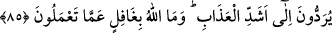
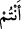

dökülmesinde sona doğru hızla gidilmiştir de, Allah bunu haber vermiştir.
“Biriniz başka birini yerinden yurdundan ayırmasın” veya komşularınıza kötü söz
söyleyip onları yurtlarından çıkarmaya mecbûr etmeyin. Yurtlardan çıkarma olayının
“katl” hâdisesinden hemen sonra zikredilmesi, onun da katl ile eş değer olduğunu
hatırlatmak içindir.
Siz de bu ahdi ikrâr etmiş, bunun kendiniz için uygulanmasının gerekli ve
korunmasının lüzûmlu olduğunu beyân etmiştiniz. “Şu anda siz buna şâhidlik
etmektesiniz.” Âyetin bu kısmı, onların ikrârlarını te’kîd etmek için gelmiştir. Meselâ:
“Falan kimse şunu kendisi ikrâr etti ve kendisi de şâhiddir” demek aynı anlamadır. Veya
ikinci bir mânâ: “Bugün siz ey yahûdîler, atalarımızın ahdi ikrârlarına şehâdet
etmektesiniz” şeklinde olur.
85. Bu misakı kabûl eden sizler, (verdiğiniz sözün tersine) birbirinizi öldürüyor,
aranızdan bir zümreyi yurtlarından çıkarıyor, kötülük ve düşmanlıkta onlara karşı
birleşiyorsunuz. Onları yurtlarından çıkarmak size haram olduğu halde (hem
çıkarıyor hem de) size esîrler olarak geldiklerinde fidye verip onları
kurtarıyorsunuz. Yoksa siz Kitâb’ın bir kısmına inanıp bir kısmını inkâr mı
ediyorsunuz? Sizden öyle davrananların cezâsı dünyâ hayatında ancak rüsvaylık;
kıyâmet gününde ise en şiddetli azâba itilmektir. Allah sizin yapmakta
olduklarınızdan asla gâfil değildir.
(
) Mübtedâ (
) haberdir. İfâdenin nirengi noktası değişik zâtların yerine
değişik sıfatların konmasıdır. “Dışarı çıktığından başka bir şekilde geri döndün.”
derken bunu anlatmış olursun. Mânâ şu olur: İşte tüm bunlardan sonra siz, şâhid olan,
tenâkuza düşen ve muhâlefet eden kimselersiniz. Yâni sanki siz, o ikrâr eden insanlar
değil de, başka bir topluluksunuz. Sanki onlar “Biz nasılız?” dediler ve onlara şöyle
denildi: “Birbirinizi öldürürsünüz.” Bu bölüm “Ve aranızdan bir kısmını
memleketlerinden sürersiniz.” kısmını açıklar. “Onlara karşı, günah ve düşmanlıkta
sırt sırta verenlersiniz” Bu “çıkarma” işinin keyfiyetini belirtir ve bu âyetteki haram
kılma işinin çıkarma hâdisesinin, sâdece toplu halde yardımlaşarak değil, müstakillen